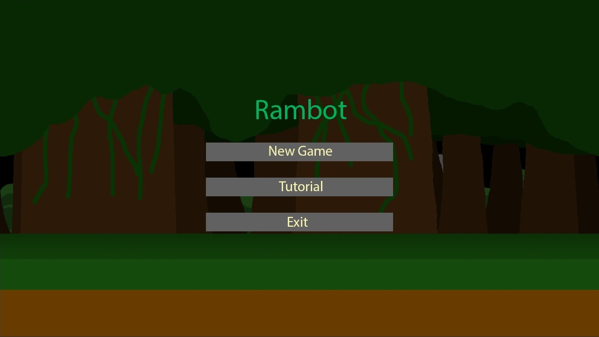
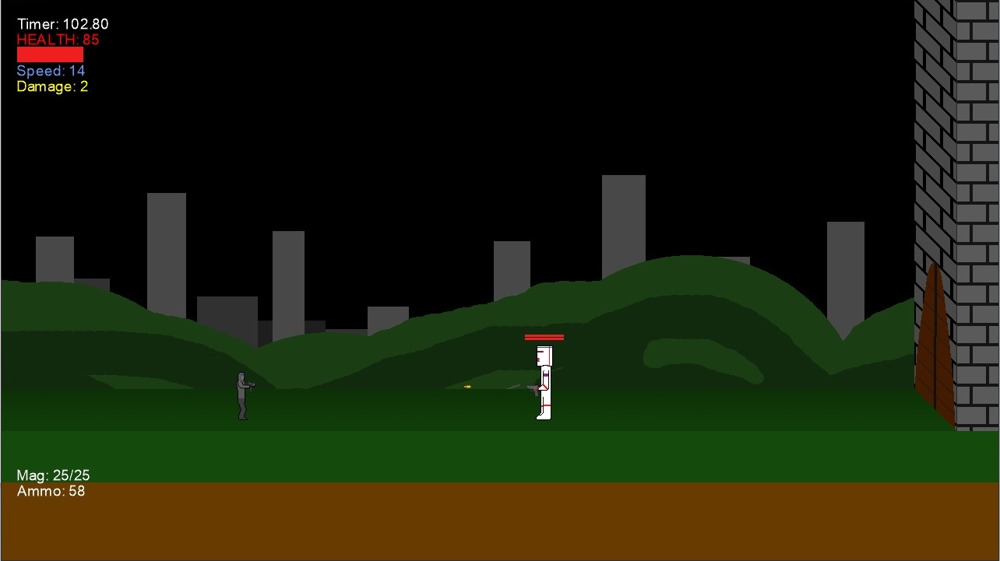
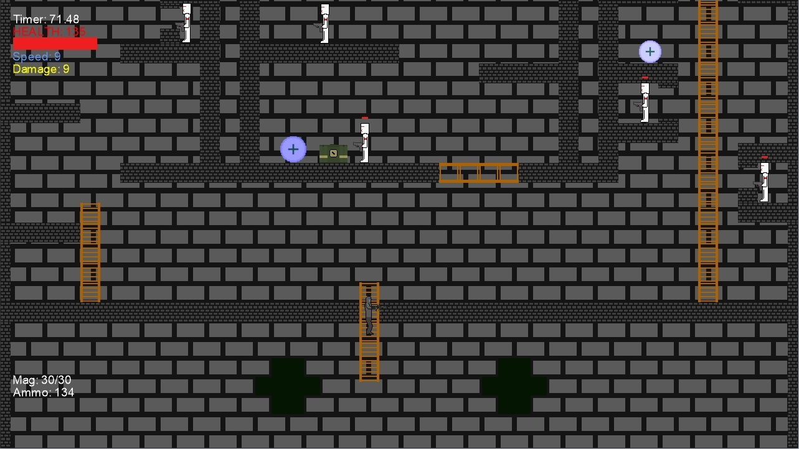
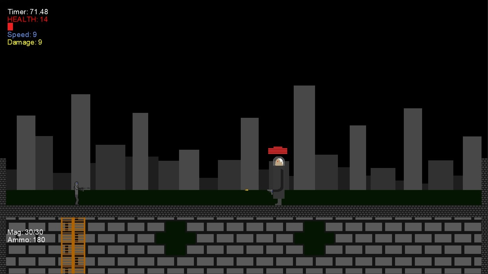
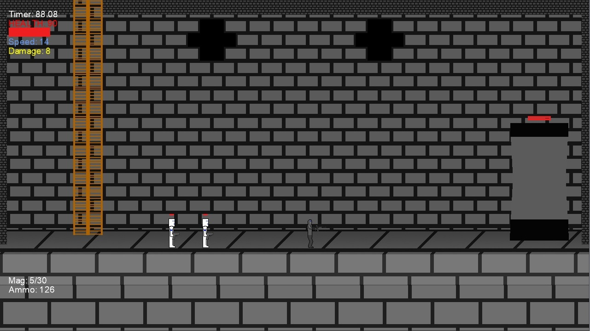

Rambot was a 2D platformer-shooter I helped develop as part of a group project I made in my second semester of freshman year along with 5 other students. It was developed using Visual Studio and coded in C# using the MonoGame framework (a recreation of Microsoft's XNA framework). I took charge on this project as group leader, in which I made a production timeline for our game and had the group adhere to it during development, held weekly meetings to discuss the current state of our game and what the next phase in development should be, and helped divvy up assignments and project roles among group members. In addition to this, I helped code the game's structural architecture, collision-detection, and gunplay (weapon characteristics, firing, and reloading). Below you can find a collection of screenshots from the final build of Rambot along with descriptions of what each is depicting.
Depicted above is the title screen for the game Rambot I helped develop.
The screenshot above shows off a game screen the player would see during normal gameplay. Depicted is the HUD which consists of a timer, the player's health, the player's speed bonus, the player's damage bonus , the player's current magazine size/capacity and ammo reserves. Also depicted are a weapon pickup(top left corner), a damage bonus pickup (bottom left corner), a "grunt" style enemy (bottom-middle), a health pickup (bottom right), and an ammo pickup (middle-right).
In Rambot we had created more than just one class of enemy. Above shows the "Mini-Boss" enemy type the player must encounter before being able to enter the second half of the level.
The level my group created for Rambot consisted of two parts. The outside "forest" half of the level that was depicted earlier and the inside "castle" half of the level depicted now. In the first half, the player was has to progress through the level by moving horizontally. In the second half, the player is has to progress through the level by moving vertically. Moving up or down in this half provided the player with different challenges.
This is one of the two possible endings to the second half of the level. In this ending, the player must encounter and defeat our third "Boss" type of enemy who's health and power increased the longer it took the player to reach the castle (second half of the stage).
This is the second type of ending that is reached by the player moving down the castle. In this ending, the player must destroy the castle's reactor while also being attacked by enemies. If the reactor is destroyed, it initiates a countdown timer in which the player must escape the castle before it reaches 0 in order to win the game.